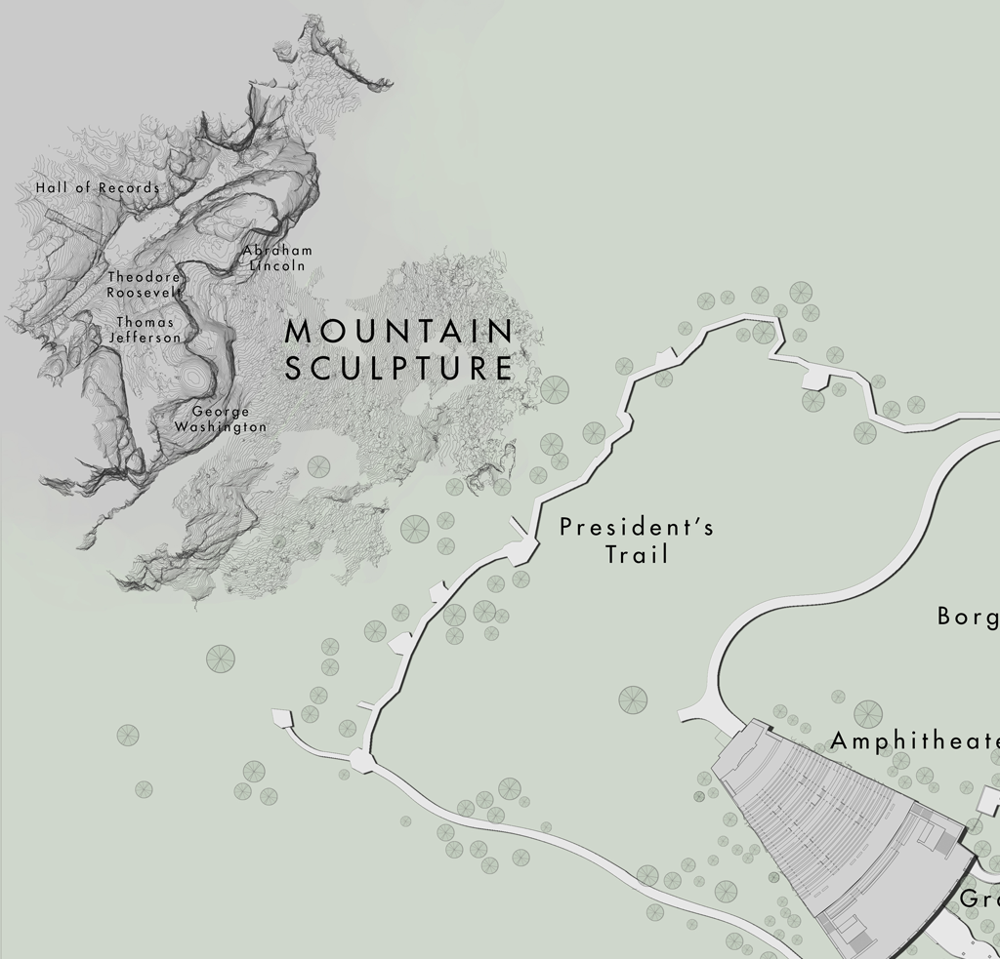
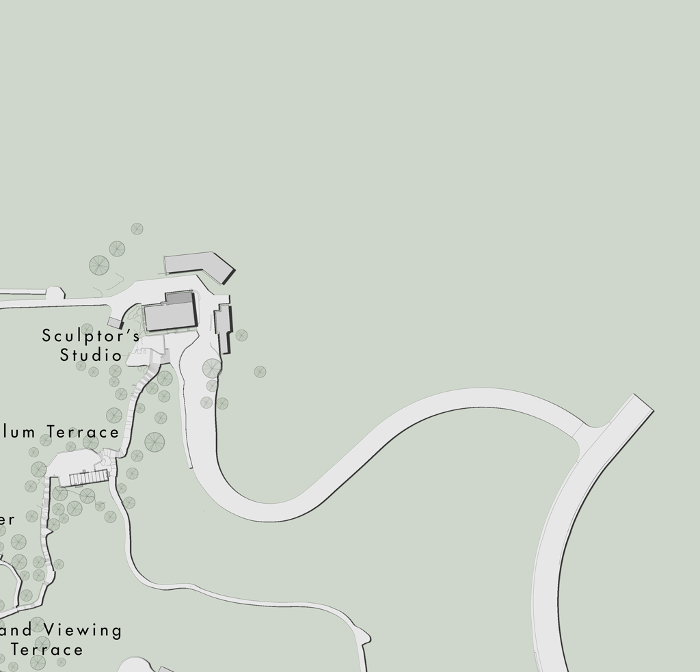
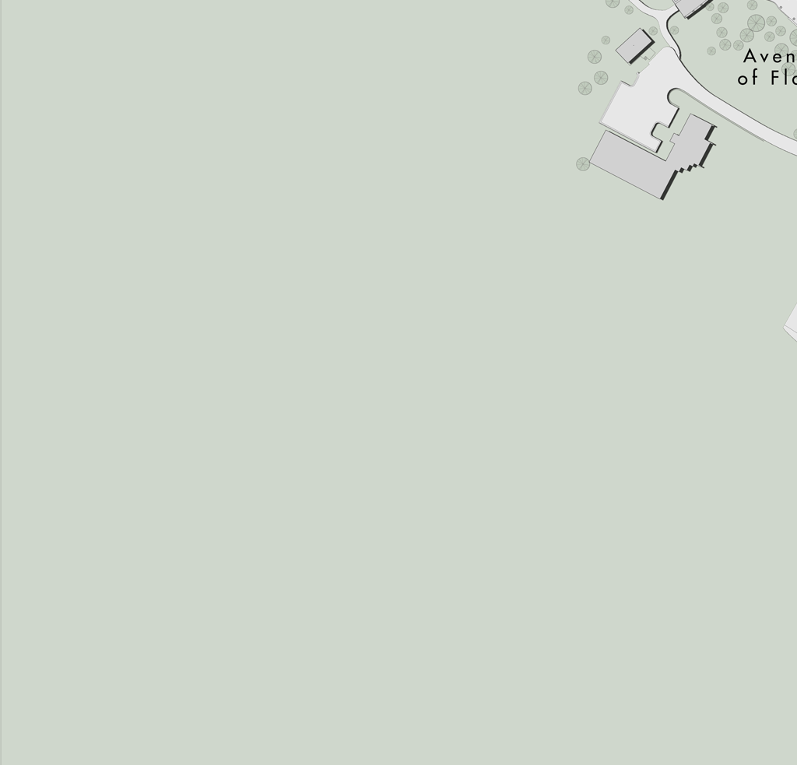
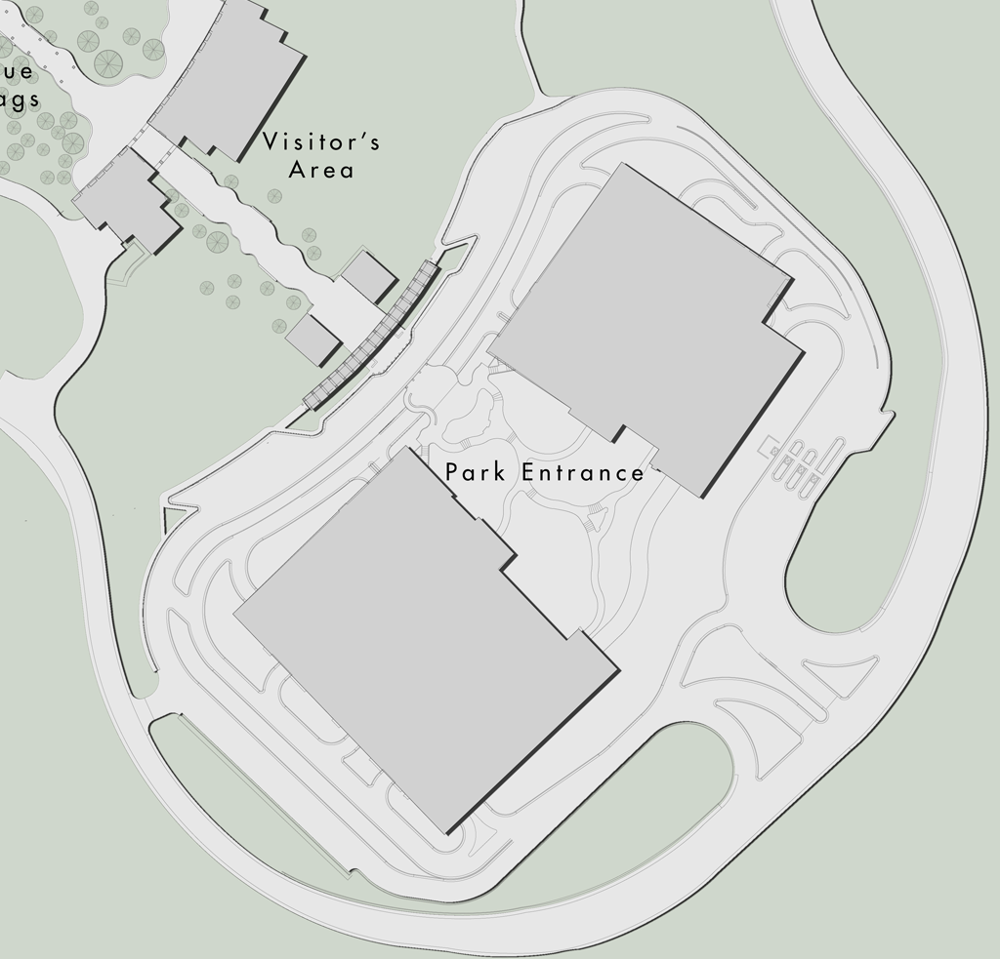
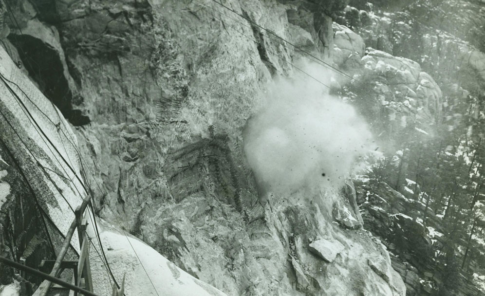

"Double Tap" to zoom in/out
Tap a to view the Panoramic Image
(Tap to close)
Virtual tour audio narration by Brian W. Roberts
   
Loading ...

Mount Rushmore Media Element
Back
Animation of the Mountain Sculpture, created from laser scan data
Animation of George Washington, created from laser scan data
Animation of Abraham Lincoln, created from laser scan data
Animation of the Hall of Records, created from laser scan data
Animation of Theodore Roosevelt, created from laser scan data
Animation of Thomas Jefferson, created from laser scan data